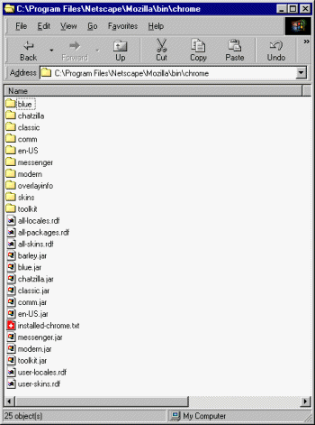
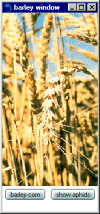
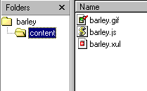
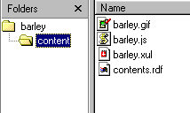
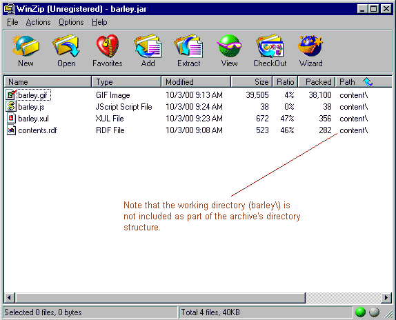
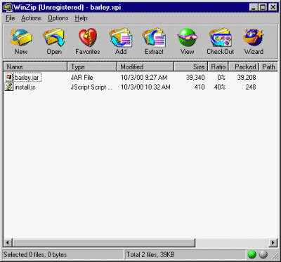
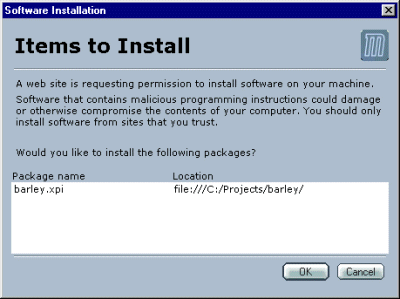

You are currently viewing a snapshot of www.mozilla.org taken on April 21, 2008. Most of this content is highly out of date (some pages haven't been updated since the project began in 1998) and exists for historical purposes only. If there are any pages on this archive site that you think should be added back to www.mozilla.org, please file a bug.
| << XULNotes | Author: Ian Oeschger | Other Documents: JAR Packaging Developer Notes from mozdev.org |
Mozilla has introduced major changes to the way that themes and all the other parts of the UI are packaged. Under the chrome\ directory in recent builds, you'll notice that in addition to the package subdirectories, there are now also a handful of JAR files, or Java archives (see figure below). These archives are redundant with the subdirectories: Mozilla now installs both the compressed and uncompressed versions of the UI, though you can change this when you build Mozilla yourself.
In addition to these JAR files, there are also several new RDF files. These new files represent a redesign of the way that the Mozilla UI is packaged and installed. Though the chrome directory still includes subdirectories of uncompressed files by default, a new way to aggregate and distribute the files has improved performance, made the UI components more portable and easier to install, and made the installation process a much easier one.

However, this new arrangement does not make things much easier for the web or user interface developer. The relatively simple process of finding the appropriate resources (i.e., XUL, JavaScript, or CSS files) in the chrome subdirectories and editing them with a text editor has been replaced by something a lot of developers find more confusing and esoteric. This article describes the new packaging scheme of the Mozilla and offers a tutorial for creating a new package that can then be redistributed, installed, and made available to users.
A complete description of the new packaging scheme is beyond the scope of this article. The reader is referred to a recent addition to the mozilla.org website, Jar Packaging, which describes the design, goals, and options available for jar packaging in some depth. What follows is a very brief overview of the design and a description of what Mozilla expects in installable packages.
Resources are collected in JAR archives whose contents are specified in contents.rdf files at their own top level. The contents.rdf file explains the structure and contents of the archive to Mozilla's chrome registry; as long as the explanation is accurate, the contents can be arranged in almost any way you want. In the package you create in this tutorial, for example, all of the resources are located under the content\ subdirectory, but they could just as easily have been archived directly at the top--along with skin and locale resources, if you wanted.
Where before a single manifest.rdf file described the resources in an entire package directory or archive, now contents.rdf files can be used for as large or as small a part of your package description as you want; you can use several contents.rdf files in your package to describe the various parts (e.g., one for the skin of your package, another for the content, and so on), or you can use a single one, as was common before.
Mozilla is alerted to these content specifications and the resources they manage either through registration as part of an installation process (as described in this tutorial) or by way of a shortcut file called installed-chrome.txt, in which developers can point at their new contents.rdf files and have them registered as they develop (a process we do not describe here). One way of another, the chrome registry is shown the contents.rdf files; the contents.rdf files in turn point to new resources, and the resources are then registered with Mozilla and accessible to the user.
The package described in this section is a very simple one, but it uses the new packaging scheme and the chrome registry to make itself a piece of self-contained and redistributable software. Once you have created a package like the one described here, Mozilla users can download and install it in a single step.
The barley package is a simple XUL window with a couple of buttons and an image element. One of the buttons, labeled "show aphids", displays an alert dialog by calling a function defined in the JavaScript file barley.js.

Since we are not updating the Mozilla UI to provide special access to this window (e.g., an item in the Tasks menu or elsewhere), the measure of the success of the installation of the barley package is that the user can, as before, invoke our software by using a special startup option:
mozilla -chrome chrome://barley/content
This option tells Mozilla to load a chrome other than the default, which is the main browser window. For this option to work, the designated chrome must have been installed and registered properly with Mozilla. The chrome:// url pointer corresponds to the directory Mozilla/bin/chrome/barley/content, where the main XUL file and the other resources live once they are installed.
This tutorial describes the following sequence of steps for creating a new package:
You can examine (or install!) the package described here by downloading the following XPI file and using zip software to open it.
All of the resources described in this article are in the XPI archive and can be adapted for use in your own development.
Needless to say, one of the first things you will have to create is the actual software you wish to make redistributable. The Barley package UI is a single XUL window with an accompanying image:
<?xml version="1.0"?> <?xml-stylesheet href="chrome://communicator/skin/" type="text/css"?> <window title="barley window" xmlns:html="http://www.w3.org/1999/xhtml" xmlns="http://www.mozilla.org/keymaster/gatekeeper/there.is.only.xul" width="175" height="375" x="20" y="20" persist="width height x y" orient="vertical" autostretch="always"> <script src="barley.js"/> <image src="barley.gif" /> <box orient="horizontal" autostretch="never"> <button label="barley corn" /> <button label="show aphids" onclick="bar();" /> </box> </window>
The other files that the window imports are defined in dark blue. Note that the stylesheet processing instruction at the top of the XUL file does not refer to any new skin, but imports communicator.css to make use of that skin's basic widget styles.
The JavaScript file barley.js contains a single function, bar(), defined as follows:
function bar() { alert("aphids"); }
If you want to use the same GIF image that is used in the Barley package, it can be grabbed from here.
While you are developing these resources and before you have made them a package of their own, you can test the basic layout and functionality by opening barley.xul from within Mozilla by using File -> Open. Though Mozilla will not display the file as a separate window (much less interpret it as a separate package), you ought to be able to see the image and the JavaScript function working as defined in barley.js (provided that both all three files are in the same working directory).
Now that you have created the basic files to be included in your package, you should put them all in a single directory so that they can be bundled up. When your package includes its own theme, localization packs, or other components it's convenient (but not necessary to create a subdirectory structure that reflects the role of the different parts. For the Barley package, you only need to create a single subdirectory, content\ (see figure below).

One of the most important ingredients of the software package is the contents.rdf file that describes the contents of the package in terms that the chrome registry can make sense of. For a package such as this one with its own content but no special localization or custom skin, the contents.rdf file describes package in terms of its relation to the "root" package of Mozilla. In the following listing, the items in red are particular to the barley package and can be edited for your own distribution:
Create a contents.rdf file like the one in the listing above and put it in the contents\ subdirectory with the other package resources.

These four files are all you need in your new package. The next step is to zip up the contents of the working directory. Using WinZip or another shareware ZIP software program, create a new archive of the contents\ subdirectory and name it barley.jar:

Once this step is complete, the Barley package is in the same state as the JAR packages of the Mozilla UI. comm.jar, en-US.jar, and all of the other archived UI packages have a similar--if slightly more complex--structure and content specification as the barley.jar
What remains is to package up your JAR file in such a way that it can be installed using Mozilla's XPInstall technology. The XPI file format (pronounced "zippy") is used to designate archives that use Mozilla's XPInstall to install themselves. An XPI file typically contains the resources to be installed (in this case the barley.jar we want to have installed in the Mozilla/bin/chrome directory) and an install script that guides the installation process.
For Barley, that installation script should read as follows:
// initInstall(name + version, name, version); var err = initInstall("barley v", "barley", ""); logComment("initInstall: " + err); addFile("Barley Grain", // displayName from contents.rdf "barley.jar", // jar source getFolder("Chrome"), // target folder ""); // target subdir // registerChrome(TYPE, location, source) registerChrome(PACKAGE | DELAYED_CHROME, getFolder("Chrome","barley.jar"), "content/"); if (err==SUCCESS) performInstall(); else cancelInstall(err);
Note that there is no version number on Barley, and so the name + version parameter has a "v" and then nothing else. Note also the use of resource attributes specified in the contents.rdf file in the JAR. It is the correspondence of this installation script, the resources themselves, and the contents.rdf file that registers the package and makes it available.
The final step in the tutorial is to create a XPI archive in which the install.js script and the barley.jar can be redistributed. The archiving of an archive may seem a little redundant--and if you want you can instead use the XPI to archive the install script and "flat", or uncompressed, versions of the resources. But the XPI puts all of the resources of your package together, including the instructions for installing it. Like the JAR format that Mozilla uses to archive the UI packages, the XPI format is just a specially-ordered ZIP file. For a XPI file to be valid and installable, it must contain an installation script like the one above that tells Mozilla XPInstall where to put the new resources and how to register them.
To create a XPI, use your zip software again to archive the JAR file and the installation script install.js. The archive, named barley.xpi, should have the following two files:

This file, when opened from Mozilla using File -> Open, will initialize its own installation and display a message like the following:

When you click OK, Mozilla installs the new package. Exit Mozilla and restart it with mozilla -chrome chrome://barley/content, and the new package displays. The resources are installed in the mozilla\bin\chrome\ directory, and the XPI itself can be redistributed for installation on other machines.
{kind=link}